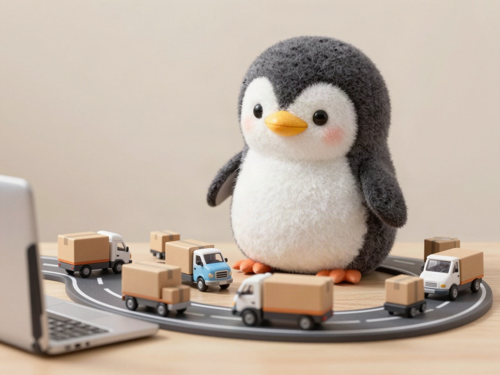

📝 DRAFT · 下書き — まだ本番に出していません · 下書き一覧
🛠 NETWORK OPERATIONS⚡ 40 SEC
The network gets tight on Windows Update day every month 🪟

Update Day
The monthly “Windows Update day” also makes the network tight.
Second Wednesday
I think it was around the 2nd or 3rd Wednesday of every month, and on that day many different companies start updating Windows all at the same time.
When I looked it up with AI, Microsoft's updates come on the 2nd Tuesday of every month in American time.
In Japan, it is the next day, Wednesday.
So it can be the 2nd Wednesday, and it can also be the 3rd Wednesday.
📅 2nd week
🇺🇸 Tuesday (US time)→🇯🇵 Wednesday (Japan)
A Set Limit
Companies often have a bandwidth contract that says “you may use up to here”.
To The Limit
But only on the update day, they use data all at once, right up to the edge of that limit, so the network gets tight.